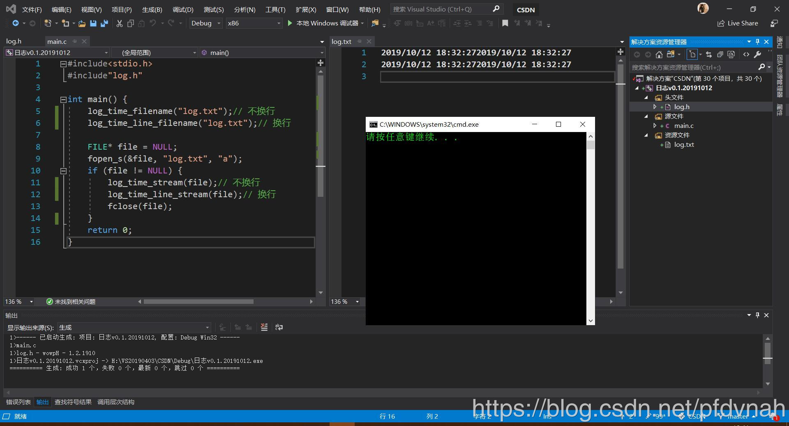

程序实现很简单，涉及到的只有两个知识点。
1、文件最最基本的打开关闭；
2、系统时间的获取。
代码是在VS2019环境下编写的，部分函数在其他编译器中会无法识别。这个就只能需要自己去查找对应的函数简单修改即可。
如果遇到问题，欢迎大家提出来一起讨论。
先来介绍一下 文件操作 的基本方法。
操作文件必须遵从的过程是：打开，读写，关闭。
一个文件首先要知道的是 文件名，当然你也可以新建一个文件。
如果是不同路径下的文件，还需要知道文件的路径。为了方便，本文采用同一目录下操作来说明。
只知道文件名并没什么用处，重要的是要通过文件名得到 文件结构体 FILE 的变量，里面会保存文件的一些基本但重要的信息。然后通过它来进行下一步的读写。
先来看一下文件操作的简单代码示例，后面再介绍函数的功能。
1 #include <stdio.h>
2
3 int main(void) {
4 FILE* stream;// 文件指针
5 errno_t err;// 错误码
6 char* filename = "file.txt";// 文件名
7 // 打开，以在文件末尾追加(append)数据的形式打开文件filename
8 err = fopen_s(&stream, filename, "a");
9 if (err == 0) {
10 printf("文件 %s 打开成功\n", filename);
11 } else {
12 printf("文件 %s 打开失败\n", filename);
13 }
14 // 读写
15 if (stream != NULL) {
16 // 向文件末尾追加一段文字。
17 fprintf(stream, "%s", "文件操作成功！\n");
18 }
19 // 关闭
20 if (stream != NULL) {
21 // 关闭文件指针，先要判断是否为空
22 err = fclose(stream);
23 if (err == 0) {
24 printf("文件 %s 关闭成功\n", filename);
25 } else {
26 printf("文件 %s 关闭失败\n", filename);
27 }
28 }
29 }打开文件用到的是 fopen_s 函数，函数语法如下：errno_t fopen_s(
FILE** pFile, // 一个指向文件指针的指针，它将接收指向打开的文件的指针。
const char *filename, // 文件名
const char *mode // 文件打开的方式，方式有很多种，可参考上面的链接。
);
如果打开成功返回 0，否则返回相应的错误码。
写数据用到的函数是 fprintf，语法如下：
int fprintf(
FILE *stream, // 文件指针
const char *format [, // 格式控制字符串
argument ]... // 可选参数
);
类似 printf 函数，只不过多了个文件指针而已。很好理解。
返回值是写入的字节数，通常用不到，可忽略。
当然，不止这一个函数可以写操作，还有 fwrite 函数，fputs 函数等等。
关闭文件用的是 fclose 函数，语法如下：
int fclose(
FILE *stream // 文件指针
);
关闭成功，返回 0，错误返回 EOF。
有了上面这些知识，你就可以向文件写入一个 Hello World 了。其实还有很多内容，但是如标题所示，现在要写的是时间。是个字符串，只需要用到这些内容。其他的可参考 UCRT alphabetical function reference。
现在来看看怎么获取当前时间。直接上代码，再说明函数语法（其实看注释就够了）。
#include <stdio.h>
#include <time.h>
int main(void) {
char timebuf[21];// 字符串形式保存时间
time_t ltime;// 时间戳
struct tm today;// 本地时间结构体
errno_t err;// 错误码
time(<ime);// 获取系统时间
err = _localtime64_s(&today, <ime);// 转换为本地时间
if (err != 0) {
printf("无法转换为本地时间\n");
exit(1);
}
// 将时间转换为字符串，自定义格式
strftime(timebuf, 21, "%Y/%m/%d %T%n", &today);
printf(timebuf);
}
用到的函数有：time，_localtime64_s，strftime
time 语法如下：
time_t time( time_t *destTime ); // 获取系统时间，参数是指向时间的存储位置的指针
返回值是从 1970/01/01 00:00:00 以来经过的秒数。有错误返回 -1。
_localtime64_s 语法如下：
errno_t _localtime64_s(
struct tm* tmDest, // 指向要填充的时间结构体
__time64_t const* sourceTime // 指向时间的存储位置的指针
); // 将时间转换为本地时间结构体
转换成功返回 0，否则返回对应的错误码。
strftime 语法如下：
size_t strftime(
char *strDest, // 保存时间的字符串
size_t maxsize, // strDest指向的大小
const char *format, // 格式控制串，参照使用手册。
const struct tm *timeptr // 时间结构体
);
返回填充的字符数，如果超过了 maxsize，返回 0。
到这里差不多就已经掌握了简单的写入时间操作。可以试试自己写一写。
不会也没关系，下面的代码是封装好的。可以直接调用。
// 功能：向txt文件filename末尾追加格式为YYYY/MM/DD HH:MM:SS的时间
// filename是文件名，文件名本身不带双引号
void log_time_filename(char const* filename);
// 功能：向stream指向的文件末尾追加格式为YYYY/MM/DD HH:MM:SS的时间
// stream必须打开
void log_time_stream(FILE* stream); // 参数是文件指针
// 功能：向txt文件filename末尾追加格式为YYYY/MM/DD HH:MM:SS的时间并换行
// filename是文件名，文件名本身不带双引号
void log_time_line_filename(char const* filename);
// 功能：向stream指向的文件末尾追加格式为YYYY/MM/DD HH:MM:SS的时间并换行
// stream必须打开
void log_time_line_stream(FILE* stream);
将代码保存到与 调用文件 在同一级目录下的 log.h 文件中。有四个外部函数可供调用。
/*********************************************************************
文件： log.h
环境： Windows 10
IDE： Visual Studio 2019
版本： 1.5.0.1910
功能： 1、向 <文件名.txt> 文件末尾追加当前系统时间
2、向 <FILE* stream> 指向的文件末尾追加当前系统时间
备注： 1、目前只有默认日期格式，即YYYY/MM/DD hh:mm:ss
2、支持换行和不换行两种形式
日期： 2019年10月16日15:42:15
作者： wowpH
*********************************************************************/
#pragma once
#pragma message("log.h - wowpH - 1.5.0.1910")
#include <stdio.h>
#include <stdlib.h>
#include <time.h>
// 时间格式的最大长度
#define MAX_TIME_MODE_SIZE 21
//
// 可调用的函数
//
// 通过文件名追加时间
void log_time_filename(char const* filename);
// 通过文件指针追加时间
void log_time_stream(FILE* stream);
// 通过文件名追加时间，换行
void log_time_line_filename(char const* filename);
// 通过文件指针追加时间，换行
void log_time_line_stream(FILE* stream);
//
// 供内部使用的函数，外部调用可能出错
//
// 向strDest写入当前时间
void get_local_time(char* strDest);
// 打开文件
void open_file(FILE** stream, char const* filename);
// 关闭文件
void close_file(FILE* stream);
将代码保存到与 调用文件 同一级目录下的 log.c 文件中。
#include "log.h"
const char* null_stream = "文件指针为空，请先打开一个文件！";
const char* error_open = "文件打开失败！";
const char* error_close = "文件关闭失败！";
const char* error_to_localtime = "无法转换为本地时间！";
void log_time_filename(char const* filename) {
FILE* stream = NULL;
open_file(&stream, filename);
log_time_stream(stream);
close_file(stream);
}
void log_time_stream(FILE* const stream) {
if (stream != NULL) {
char time[MAX_TIME_MODE_SIZE];
get_local_time(time);
fprintf(stream, "%s", time);
} else {
printf("%s\n", null_stream);
exit(-1);
}
}
void log_time_line_filename(char const* filename) {
FILE* stream = NULL;
open_file(&stream, filename);
log_time_line_stream(stream);
close_file(stream);
}
void log_time_line_stream(FILE* stream) {
log_time_stream(stream);
fprintf(stream, "\n");
}
static void get_local_time(char* strDest) {
time_t ltime;
time(<ime);
struct tm today;
errno_t err;
err = _localtime64_s(&today, <ime);
if (err != 0) {
printf("%s\n", error_to_localtime);
exit(-1);
}
// 将时间转换为字符串，自定义格式
strftime(strDest, MAX_TIME_MODE_SIZE, "%Y/%m/%d %T", &today);
}
static void open_file(FILE** stream, char const* filename) {
errno_t err = 0;
err = fopen_s(stream, filename, "a");
if (err != 0) {
printf("%s\n", error_open);
exit(-1);
}
}
static void close_file(FILE* stream) {
if (stream != NULL) {
errno_t err = 0;
err = fclose(stream);
if (err != 0) {
printf("%s\n", error_close);
exit(-1);
}
}
}
